<!DOCTYPE html>


<html lang="zh-CN">


<head>
  <meta charset="utf-8" />
    
  <meta name="viewport" content="width=device-width, initial-scale=1, maximum-scale=1" />
  <title>
    稀疏矩阵算法最小度数算法二之商图 |  VincereZhou&#39;s blog
  </title>
  <meta name="generator" content="hexo-theme-ayer">
  
  <link rel="shortcut icon" href="/images/mojie.jpg" />
  
  
<link rel="stylesheet" href="/dist/main.css">

  <link rel="stylesheet" href="https://cdn.jsdelivr.net/gh/Shen-Yu/cdn/css/remixicon.min.css">
  
<link rel="stylesheet" href="/css/custom.css">

  
  <script src="https://cdn.jsdelivr.net/npm/pace-js@1.0.2/pace.min.js"></script>
  
  

  

<link rel="alternate" href="/atom.xml" title="VincereZhou's blog" type="application/atom+xml">
</head>

</html>

<body>
  <div id="app">
    
      
    <main class="content on">
      <section class="outer">
  <article
  id="post-稀疏矩阵算法最小度数算法二之商图"
  class="article article-type-post"
  itemscope
  itemprop="blogPost"
  data-scroll-reveal
>
  <div class="article-inner">
    
    <header class="article-header">
       
<h1 class="article-title sea-center" style="border-left:0" itemprop="name">
  稀疏矩阵算法最小度数算法二之商图
</h1>
 

    </header>
     
    <div class="article-meta">
      <a href="/posts/aef04e13/" class="article-date">
  <time datetime="2022-09-25T08:43:39.000Z" itemprop="datePublished">2022-09-25</time>
</a> 
  <div class="article-category">
    <a class="article-category-link" href="/categories/%E7%90%86%E8%AE%BA%E5%AD%A6%E4%B9%A0/">理论学习</a> / <a class="article-category-link" href="/categories/%E7%90%86%E8%AE%BA%E5%AD%A6%E4%B9%A0/%E7%A8%80%E7%96%8F%E7%9F%A9%E9%98%B5/">稀疏矩阵</a>
  </div>
  
<div class="word_count">
    <span class="post-time">
        <span class="post-meta-item-icon">
            <i class="ri-quill-pen-line"></i>
            <span class="post-meta-item-text"> 字数统计:</span>
            <span class="post-count">2k</span>
        </span>
    </span>

    <span class="post-time">
        &nbsp; | &nbsp;
        <span class="post-meta-item-icon">
            <i class="ri-book-open-line"></i>
            <span class="post-meta-item-text"> 阅读时长≈</span>
            <span class="post-count">7 分钟</span>
        </span>
    </span>
</div>
 
    </div>
      
    <div class="tocbot"></div>


  
    <div class="article-entry" itemprop="articleBody">
       
  <link rel="stylesheet" type="text/css" href="https://cdn.jsdelivr.net/hint.css/2.4.1/hint.min.css"><p>本章节介绍 <em>the minimum degree algorithm</em> ，我个人将其翻译为最小度数算法。这里我们看如何用商图表示和转换消元图。</p>
<span id="more"></span>
<h1>Computer Representation of Elimination Graphs</h1>
<p>在这一章节汇总，我们研究如何在计算中表示和转换 <em>elimination graphs</em> 。</p>
<h2 id="Explicit-and-Implicit-Representations">Explicit and Implicit Representations</h2>
<p>让我们回顾一下消元的转换过程， 是从  消除节点  得到的图， 的相邻结构可以按照下面的方式获得：</p>
<ol>
<li>
<p>获得   中的相邻集合 </p>
</li>
<li>
<p>从相邻结构中移除节点  及其相邻列表</p>
</li>
<li>
<p>对于任何一个节点  ，  在  中新的相邻列表通过合并两个子集得到</p>
<p style=""></p></li>
</ol>
<p>这里有两点需要注意，首先在相邻结构中用于存储  的空间可以在第二步之后重复使用；第二， 可能会比  占用更多的空间。</p>
<p>我们需要一种更加灵活的数据结构，用于存储在 <em>elimination graphs</em>  中结构的动态变化，比如之前提到的 <em>adjacency linked list</em> 。</p>
<h2 id="Quotient-Graph-Model">Quotient Graph Model</h2>
<p>让我们首先对下面的图进行消元，我们消除节点  到  之后得到右边的消元图。</p>
<p>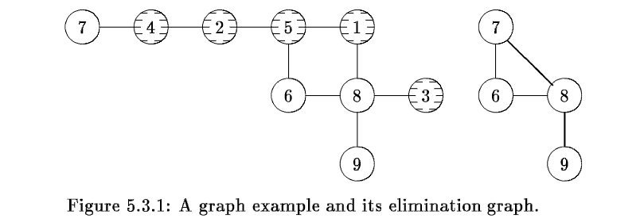</p>
<p>设  ，在 <em>implicit model</em> 中，为了发现  ，我们必须先找到路径  。相似地，  也是因为存在路径  。注意这两个路径的长度分别为 4 和 5 。</p>
<p>我们有两个观测结果：</p>
<ol>
<li>如果未消元的节点间的 reachable path 的长度可以缩减，那么生成 reachable sets 的工作量会降低</li>
<li>如果上面的这些路径可以缩减到极端的情况，那么我们就可以得到 <em>explicit elimination graphs</em> 。</li>
</ol>
<p>我们寻求一个妥协，通过聚集连接的消除的节点，我们获得了一个新的图结构。举个例子，在上面的图中，在图  中存在两个连通组分，分别为  和  。通过形成两个 “supernodes”，我们获得下面的图</p>
<p>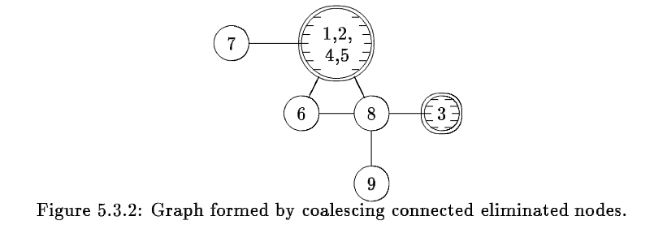</p>
<p>为了方便，我们设   和  来表示  中的这两个连通组分。在这个新图中，我们注意到存在路径</p>
<p style=""></p><p>和</p>
<p style=""></p><p>这两条路径的长度为 2，一般来说，如果采用这种策略，那么所有这样的路径的长度均会小于等于 2 。</p>
<p>这种策略的另一个优势可以 <em>implemented in-place</em> ，也就是说，这种方式不会占用比原始的图结构更多的空间。</p>
<p>为了正式描述这种消元方式，我们引入<strong>商图</strong> (<em>quotient graphs</em>) 。设  是一个给定的图，设  是一种基于节点集合  的分隔形式</p>
<p style=""></p><p>即  , </p>
<p>我们定义  基于  的商图为图 ，其中当且仅当  时  。通常我们将这个图标记为  。</p>
<p>上面图 5.3.2 就是一个商图，其切分方式为</p>
<p style=""></p><p>设   是一个给定的图，我们考虑消元的一个阶段，其中  是已经消除的节点集合。我们现在将其联系为一个基于  的商图，定义集合</p>
<p style=""></p><p>对  的切分为</p>
<p style=""></p><p>则可以唯一地定义商图</p>
<p style=""></p><p>则可以视为对  中的聚集的连通集合得到的图，图 5.3.2 就是对  生成的商图。我们现在研究消元过程中的商图间的相关性。设  为给定图    消元的一系列节点，就像之前一样，设</p>
<p style=""></p><p>对于每一个   ，子集  可以推导出分隔方式  ，而相应的商图为</p>
<p style=""></p><p>用这种方式，我们可以得到一系列商图</p>
<p style=""></p><p>下图就是上面例子中的这一系列商图。</p>
<p>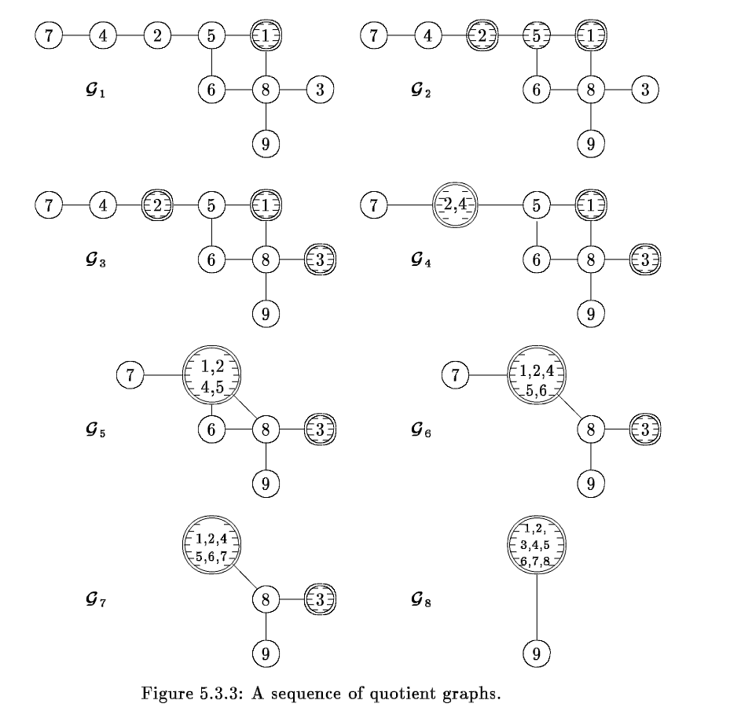</p>
<p>下图的定理说明了上面商图其实就是 <em>elimination  graphs</em> 的另一种表示。</p>
<p><strong>定理 5.3.1</strong>：对于任意  ，我们有</p>
<p style=""></p><p>证明略</p>
<p>确定在商图  的 <em>reachable set</em> 很直接，对于一个给定的节点   ，下面的算法会返回集合  ，注意这里应用了商图的 <em>reachable path</em> 长度最多为 2 的特性 。</p>
<p>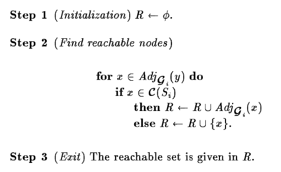</p>
<p>实际上我们可以从商图中获得 <em>elimination graph</em> ，算法如下：</p>
<p>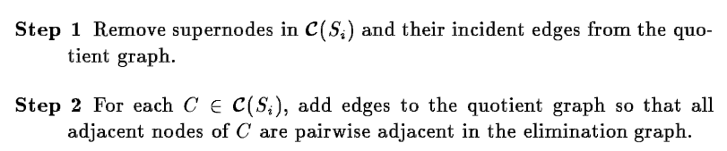</p>
<p>为了说明这个事先，我们考虑上例中从  生成  的过程（加粗表示商图，不加粗表示 <em>elimination graph</em> ），见下图</p>
<p>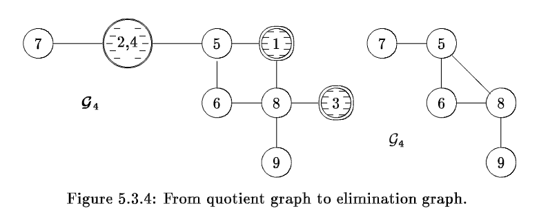</p>
<p>商图模型处于两种模型的中间</p>
<p>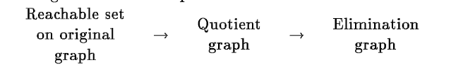</p>
<p>这三种模型的对应关系总结如下表</p>
<p>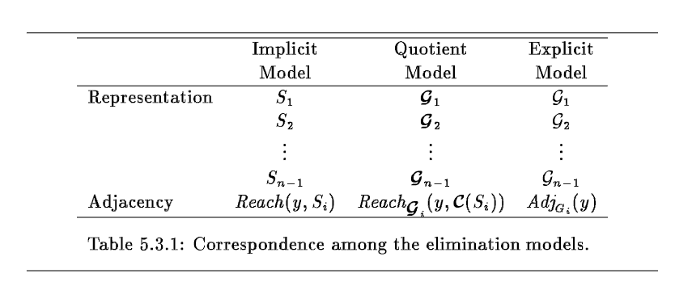</p>
<h2 id="Implementation-of-the-Quotient-Graph-Model">Implementation of the Quotient Graph Model</h2>
<p>我们考虑由消除的节点集合  形成的商图  ，如果  ，我们采用符号  来表明在子图  中的包含  的连通组分。比如，在上面的例子中</p>
<p style=""></p><p>换句话说，对于一个给定的连通组分  ，我们可以选择  中的任意一个节点  ，然后使用  来表示  ，即  。在我们讨论如何选择  之前，我们先证明商图模型可以 <em>implemented in-place</em> ，也就是说，只利用原始图的相邻结构的空间。</p>
<p><strong>引理 5.3.2</strong>：设  ,  ，其中  是一个连通的子图，那么我们有</p>
<p style=""></p><p><strong>证明</strong>：因为   是一个连通子图，因此在    中至少有  条边，这些边在  中会计算两次，得证。</p>
<p>设  是节点序列， ，对于  ，我们有：</p>
<p style=""></p><p><strong>引理 5.3.3</strong>：设  ，那么</p>
<p style=""></p><p>证明： 的相邻节点可以分为两类，属于  和 不属于   的节点。对于不属于   的节点，原图和商图均不受影响；对于属于  的节点，商图可能会合并成一个 “supernode”，因此数目会减少。因此得证  。</p>
<p>同时容易证明  ，如果  ，那么 无论 是否与其它节点进行合并，都不会影响  的相邻节点数目，因此 。如果   ，此时如果  是孤立的，那么  的相邻节点不变，如果   与其它节点进行合并，那么此时  的相邻节点数目要么不变，要么会减1。因此得证成立。</p>
<p><strong>定理 5.3.4</strong>：</p>
<p style=""></p><p>证明：考虑商图  和  ，如果  在子图  中是孤立的，那么显然  ；否则  会合并到  的某个连通组分中，形成  ，那么消元节点内的边数目不变，而根据    ，说明不属于  的节点的边的数目最多和之前相等，再加上减少的   的边，因此得到   ，因此在所有的情况中均存在   ，因此得证  。</p>
<p>这个定理说明通过消元生成的商图占用的空间不会超过原始的图，而且通过引理 5.3.2，对于  ，会富裕出  个位置。</p>
<p>设  是节点序列， 。我们选择  作为 的代表，其中</p>
<p style=""></p><p>也就是说， 是  中最后消除的节点。</p>
<p>到此为止，我们描述了商图的数据结构以及如何表示 <em>supernodes</em> ，另一个重要的部分就是在消元的过程中商图的转换。下面的算法展现了如何从   中剔除节点  得到   。</p>
<p>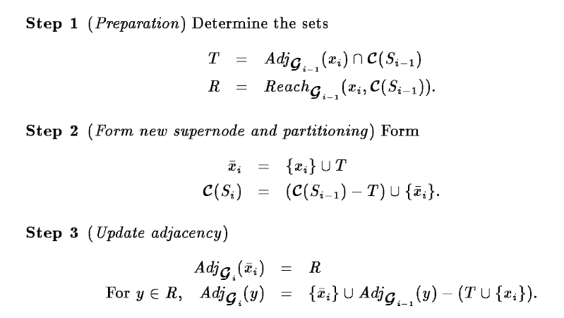</p>
<p>让我们用图 5.3.3 中从   到  的过程为例，在   中  ，我们对  采用第一步，得到</p>
<p style=""></p><p>和</p>
<p style=""></p><p>因此，新的 ”supernode“ 为</p>
<p style=""></p><p>新的拆分方式为</p>
<p style=""></p><p>最后，在第三步我们更新相邻集合，得到</p>
<p style=""></p><p>和</p>
<p style=""></p><p>商图转换的效果可以通过一个例子来说明，采用图 5.3.3 中的例子，其中我们其相邻结构如图 5.3.6 所示。图 5.3.7 展示生成商图的一些步骤，在   到  的形成过程中，相邻结构没有改变。而从   到  的转换过程中，节点  和  聚合到了一起，因此在  中，节点  的新的相邻结构包含了原图中  的相邻结构。这里  的相邻列表的最后位置采用了一个链表（貌似是其相邻节点排好序，先放到  的相邻列表中第1个到倒数第二个位置，还有多的再放到其它节点的相邻列表中。<strong>此时最后一个位置的链接采用负数，这里就是 -2</strong> 。将相邻节点最后一个位置之后的一个位置<strong>设为0</strong>，表示终止位置，对应下图中划线的方块 ）。注意在  的相邻列表中，其相邻节点  在  中改为了  ，因此此时  已经变成了子集  的代表。</p>
<p>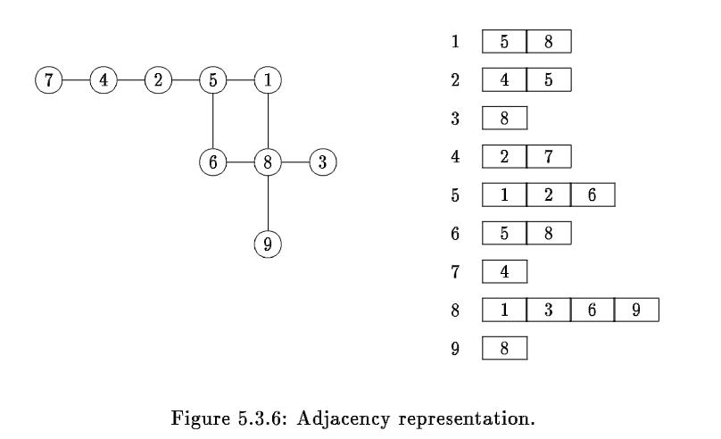</p>
<p>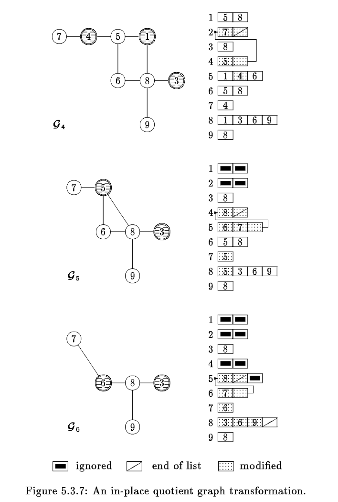</p>
<h1>参考文献</h1>
<ol>
<li>George A, Liu J, Ng E. Computer solution of sparse linear systems[J]. Oak Ridge National Laboratory, 1994.</li>
</ol>
 
      <!-- reward -->
      
    </div>
    

    <!-- copyright -->
    
    <div class="declare">
      <ul class="post-copyright">
        <li>
          <i class="ri-copyright-line"></i>
          <strong>版权声明： </strong>
          
          本博客所有文章除特别声明外，著作权归作者所有。转载请注明出处！
          
        </li>
      </ul>
    </div>
    
    <footer class="article-footer">
       
  <ul class="article-tag-list" itemprop="keywords"><li class="article-tag-list-item"><a class="article-tag-list-link" href="/tags/%E7%90%86%E8%AE%BA%E5%AD%A6%E4%B9%A0/" rel="tag">理论学习</a></li><li class="article-tag-list-item"><a class="article-tag-list-link" href="/tags/%E7%A8%80%E7%96%8F%E7%9F%A9%E9%98%B5/" rel="tag">稀疏矩阵</a></li></ul>

    </footer>
  </div>

   
  <nav class="article-nav">
    
      <a href="/posts/ff1d909d/" class="article-nav-link">
        <strong class="article-nav-caption">上一篇</strong>
        <div class="article-nav-title">
          
            稀疏矩阵算法最小度数算法三之最小度数算法理论
          
        </div>
      </a>
    
    
      <a href="/posts/9b2dddf7/" class="article-nav-link">
        <strong class="article-nav-caption">下一篇</strong>
        <div class="article-nav-title">稀疏矩阵算法最小度数算法一之消元图</div>
      </a>
    
  </nav>

   
<!-- valine评论 -->
<div id="vcomments-box">
  <div id="vcomments"></div>
</div>
<script src="//cdn1.lncld.net/static/js/3.0.4/av-min.js"></script>
<script src="https://cdn.jsdelivr.net/npm/valine@1.4.14/dist/Valine.min.js"></script>
<script>
  new Valine({
    el: "#vcomments",
    app_id: "yHN3kf7fHt5wvleM2DVoHLdY-gzGzoHsz",
    app_key: "RPIwmdftljIzOtAULwc7JCAp",
    path: window.location.pathname,
    avatar: "monsterid",
    placeholder: "靓仔，看完留个评论再走哇！\n只需要填入昵称和邮箱就可以了",
    recordIP: true,
  });
  const infoEle = document.querySelector("#vcomments .info");
  if (infoEle && infoEle.childNodes && infoEle.childNodes.length > 0) {
    infoEle.childNodes.forEach(function (item) {
      item.parentNode.removeChild(item);
    });
  }
</script>
<style>
  #vcomments-box {
    padding: 5px 30px;
  }

  @media screen and (max-width: 800px) {
    #vcomments-box {
      padding: 5px 0px;
    }
  }

  #vcomments-box #vcomments {
    background-color: #fff;
  }

  .v .vlist .vcard .vh {
    padding-right: 20px;
  }

  .v .vlist .vcard {
    padding-left: 10px;
  }
</style>

 
   
     
</article>

</section>
      <footer class="footer">
  <div class="outer">
    <ul>
      <li>
        Copyrights &copy;
        2019-2023
        <i class="ri-heart-fill heart_icon"></i> Vincere Zhou
      </li>
    </ul>
    <ul>
      <li>
        
        
        <span>
  <span><i class="ri-user-3-fill"></i>访问人数:<span id="busuanzi_value_site_uv"></span></s>
  <span class="division">|</span>
  <span><i class="ri-eye-fill"></i>浏览次数:<span id="busuanzi_value_page_pv"></span></span>
</span>
        
      </li>
    </ul>
    <ul>
      
    </ul>
    <ul>
      
    </ul>
    <ul>
      <li>
        <!-- cnzz统计 -->
        
      </li>
    </ul>

    <!-- 与只只在一起天数 -->
	<ul>
		<li><span id="lovetime_span"></span></li>
	</ul>
    <script type="text/javascript">			
        function show_runtime() {
            window.setTimeout("show_runtime()", 1000);
            X = new Date("03/04/2021 22:11:00");
            Y = new Date();
            T = (Y.getTime() - X.getTime());
            M = 24 * 60 * 60 * 1000;
            a = T / M;
            A = Math.floor(a);
            b = (a - A) * 24;
            B = Math.floor(b);
            c = (b - B) * 60;
            C = Math.floor((b - B) * 60);
            D = Math.floor((c - C) * 60);
            lovetime_span.innerHTML = "只只和男朋友在一起了 " + A + "天" + B + "小时" + C + "分" + D + "秒"
        }
        show_runtime();
    </script>

  </div>
</footer>
      <div class="float_btns">
        <div class="totop" id="totop">
  <i class="ri-arrow-up-line"></i>
</div>

      </div>
    </main>
    <aside class="sidebar on">
      <button class="navbar-toggle"></button>
<nav class="navbar">
  
  <div class="logo">
    <a href="/"></a>
  </div>
  
  <ul class="nav nav-main">
    
    <li class="nav-item">
      <a class="nav-item-link" href="/">主页</a>
    </li>
    
    <li class="nav-item">
      <a class="nav-item-link" href="/archives">归档</a>
    </li>
    
    <li class="nav-item">
      <a class="nav-item-link" href="/categories">分类</a>
    </li>
    
    <li class="nav-item">
      <a class="nav-item-link" href="/tags">标签</a>
    </li>
    
    <li class="nav-item">
      <a class="nav-item-link" href="/friends">友链</a>
    </li>
    
    <li class="nav-item">
      <a class="nav-item-link" href="/about">关于</a>
    </li>
    
  </ul>
</nav>
<nav class="navbar navbar-bottom">
  <ul class="nav">
    <li class="nav-item">
      
      <a class="nav-item-link nav-item-search"  title="搜索">
        <i class="ri-search-line"></i>
      </a>
      
      
      <a class="nav-item-link" target="_blank" href="/atom.xml" title="RSS Feed">
        <i class="ri-rss-line"></i>
      </a>
      
    </li>
  </ul>
</nav>
<div class="search-form-wrap">
  <div class="local-search local-search-plugin">
  <input type="search" id="local-search-input" class="local-search-input" placeholder="Search...">
  <div id="local-search-result" class="local-search-result"></div>
</div>
</div>
    </aside>
    <script>
      if (window.matchMedia("(max-width: 768px)").matches) {
        document.querySelector('.content').classList.remove('on');
        document.querySelector('.sidebar').classList.remove('on');
      }
    </script>
    <div id="mask"></div>

<!-- #reward -->
<div id="reward">
  <span class="close"><i class="ri-close-line"></i></span>
  <p class="reward-p"><i class="ri-cup-line"></i>请我喝杯茶吧~</p>
  <div class="reward-box">
    
    <div class="reward-item">
      
      <span class="reward-type">支付宝</span>
    </div>
    
    
    <div class="reward-item">
      
      <span class="reward-type">微信</span>
    </div>
    
  </div>
</div>
    
<script src="/js/jquery-2.0.3.min.js"></script>


<script src="/js/lazyload.min.js"></script>

<!-- Tocbot -->


<script src="/js/tocbot.min.js"></script>

<script>
  tocbot.init({
    tocSelector: '.tocbot',
    contentSelector: '.article-entry',
    headingSelector: 'h1, h2, h3, h4, h5, h6',
    hasInnerContainers: true,
    scrollSmooth: true,
    scrollContainer: 'main',
    positionFixedSelector: '.tocbot',
    positionFixedClass: 'is-position-fixed',
    fixedSidebarOffset: 'auto'
  });
</script>

<script src="https://cdn.jsdelivr.net/npm/jquery-modal@0.9.2/jquery.modal.min.js"></script>
<link rel="stylesheet" href="https://cdn.jsdelivr.net/npm/jquery-modal@0.9.2/jquery.modal.min.css">
<script src="https://cdn.jsdelivr.net/npm/justifiedGallery@3.7.0/dist/js/jquery.justifiedGallery.min.js"></script>

<script src="/dist/main.js"></script>

<!-- ImageViewer -->

<!-- Root element of PhotoSwipe. Must have class pswp. -->
<div class="pswp" tabindex="-1" role="dialog" aria-hidden="true">

    <!-- Background of PhotoSwipe. 
         It's a separate element as animating opacity is faster than rgba(). -->
    <div class="pswp__bg"></div>

    <!-- Slides wrapper with overflow:hidden. -->
    <div class="pswp__scroll-wrap">

        <!-- Container that holds slides. 
            PhotoSwipe keeps only 3 of them in the DOM to save memory.
            Don't modify these 3 pswp__item elements, data is added later on. -->
        <div class="pswp__container">
            <div class="pswp__item"></div>
            <div class="pswp__item"></div>
            <div class="pswp__item"></div>
        </div>

        <!-- Default (PhotoSwipeUI_Default) interface on top of sliding area. Can be changed. -->
        <div class="pswp__ui pswp__ui--hidden">

            <div class="pswp__top-bar">

                <!--  Controls are self-explanatory. Order can be changed. -->

                <div class="pswp__counter"></div>

                <button class="pswp__button pswp__button--close" title="Close (Esc)"></button>

                <button class="pswp__button pswp__button--share" style="display:none" title="Share"></button>

                <button class="pswp__button pswp__button--fs" title="Toggle fullscreen"></button>

                <button class="pswp__button pswp__button--zoom" title="Zoom in/out"></button>

                <!-- Preloader demo http://codepen.io/dimsemenov/pen/yyBWoR -->
                <!-- element will get class pswp__preloader--active when preloader is running -->
                <div class="pswp__preloader">
                    <div class="pswp__preloader__icn">
                        <div class="pswp__preloader__cut">
                            <div class="pswp__preloader__donut"></div>
                        </div>
                    </div>
                </div>
            </div>

            <div class="pswp__share-modal pswp__share-modal--hidden pswp__single-tap">
                <div class="pswp__share-tooltip"></div>
            </div>

            <button class="pswp__button pswp__button--arrow--left" title="Previous (arrow left)">
            </button>

            <button class="pswp__button pswp__button--arrow--right" title="Next (arrow right)">
            </button>

            <div class="pswp__caption">
                <div class="pswp__caption__center"></div>
            </div>

        </div>

    </div>

</div>

<link rel="stylesheet" href="https://cdn.jsdelivr.net/npm/photoswipe@4.1.3/dist/photoswipe.min.css">
<link rel="stylesheet" href="https://cdn.jsdelivr.net/npm/photoswipe@4.1.3/dist/default-skin/default-skin.min.css">
<script src="https://cdn.jsdelivr.net/npm/photoswipe@4.1.3/dist/photoswipe.min.js"></script>
<script src="https://cdn.jsdelivr.net/npm/photoswipe@4.1.3/dist/photoswipe-ui-default.min.js"></script>

<script>
    function viewer_init() {
        let pswpElement = document.querySelectorAll('.pswp')[0];
        let $imgArr = document.querySelectorAll(('.article-entry img:not(.reward-img)'))

        $imgArr.forEach(($em, i) => {
            $em.onclick = () => {
                // slider展开状态
                // todo: 这样不好，后面改成状态
                if (document.querySelector('.left-col.show')) return
                let items = []
                $imgArr.forEach(($em2, i2) => {
                    let img = $em2.getAttribute('data-idx', i2)
                    let src = $em2.getAttribute('data-target') || $em2.getAttribute('src')
                    let title = $em2.getAttribute('alt')
                    // 获得原图尺寸
                    const image = new Image()
                    image.src = src
                    items.push({
                        src: src,
                        w: image.width || $em2.width,
                        h: image.height || $em2.height,
                        title: title
                    })
                })
                var gallery = new PhotoSwipe(pswpElement, PhotoSwipeUI_Default, items, {
                    index: parseInt(i)
                });
                gallery.init()
            }
        })
    }
    viewer_init()
</script>

<!-- MathJax -->

<script type="text/x-mathjax-config">
  MathJax.Hub.Config({
      tex2jax: {
          inlineMath: [ ['$','$'], ["\\(","\\)"]  ],
          processEscapes: true,
          skipTags: ['script', 'noscript', 'style', 'textarea', 'pre', 'code']
      }
  });

  MathJax.Hub.Queue(function() {
      var all = MathJax.Hub.getAllJax(), i;
      for(i=0; i < all.length; i += 1) {
          all[i].SourceElement().parentNode.className += ' has-jax';
      }
  });
</script>

<script src="https://cdn.jsdelivr.net/npm/mathjax@2.7.6/unpacked/MathJax.js?config=TeX-AMS-MML_HTMLorMML"></script>
<script>
  var ayerConfig = {
    mathjax: true
  }
</script>

<!-- Katex -->

<!-- busuanzi  -->


<script src="/js/busuanzi-2.3.pure.min.js"></script>


<!-- ClickLove -->

<!-- ClickBoom1 -->

<!-- ClickBoom2 -->

<!-- CodeCopy -->


<link rel="stylesheet" href="/css/clipboard.css">

<script src="https://cdn.jsdelivr.net/npm/clipboard@2/dist/clipboard.min.js"></script>
<script>
  function wait(callback, seconds) {
    var timelag = null;
    timelag = window.setTimeout(callback, seconds);
  }
  !function (e, t, a) {
    var initCopyCode = function(){
      var copyHtml = '';
      copyHtml += '<button class="btn-copy" data-clipboard-snippet="">';
      copyHtml += '<i class="ri-file-copy-2-line"></i><span>COPY</span>';
      copyHtml += '</button>';
      $(".highlight .code pre").before(copyHtml);
      $(".article pre code").before(copyHtml);
      var clipboard = new ClipboardJS('.btn-copy', {
        target: function(trigger) {
          return trigger.nextElementSibling;
        }
      });
      clipboard.on('success', function(e) {
        let $btn = $(e.trigger);
        $btn.addClass('copied');
        let $icon = $($btn.find('i'));
        $icon.removeClass('ri-file-copy-2-line');
        $icon.addClass('ri-checkbox-circle-line');
        let $span = $($btn.find('span'));
        $span[0].innerText = 'COPIED';
        
        wait(function () { // 等待两秒钟后恢复
          $icon.removeClass('ri-checkbox-circle-line');
          $icon.addClass('ri-file-copy-2-line');
          $span[0].innerText = 'COPY';
        }, 2000);
      });
      clipboard.on('error', function(e) {
        e.clearSelection();
        let $btn = $(e.trigger);
        $btn.addClass('copy-failed');
        let $icon = $($btn.find('i'));
        $icon.removeClass('ri-file-copy-2-line');
        $icon.addClass('ri-time-line');
        let $span = $($btn.find('span'));
        $span[0].innerText = 'COPY FAILED';
        
        wait(function () { // 等待两秒钟后恢复
          $icon.removeClass('ri-time-line');
          $icon.addClass('ri-file-copy-2-line');
          $span[0].innerText = 'COPY';
        }, 2000);
      });
    }
    initCopyCode();
  }(window, document);
</script>


<!-- CanvasBackground -->


    
  </div>
<script src="/live2dw/lib/L2Dwidget.min.js?094cbace49a39548bed64abff5988b05"></script><script>L2Dwidget.init({"pluginRootPath":"live2dw/","pluginJsPath":"lib/","pluginModelPath":"assets/","tagMode":false,"debug":false,"model":{"jsonPath":"live2d-widget-model-wanko"},"display":{"position":"left","width":150,"height":300,"hOffset":80,"vOffset":-70},"mobile":{"show":false,"scale":0.5},"log":false});</script></body>

</html>